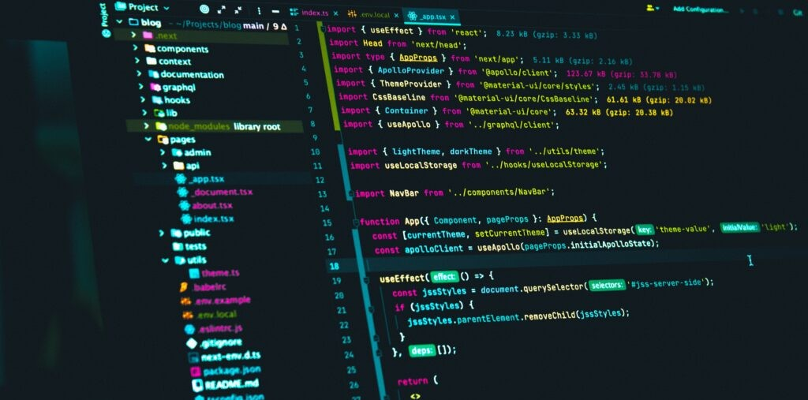
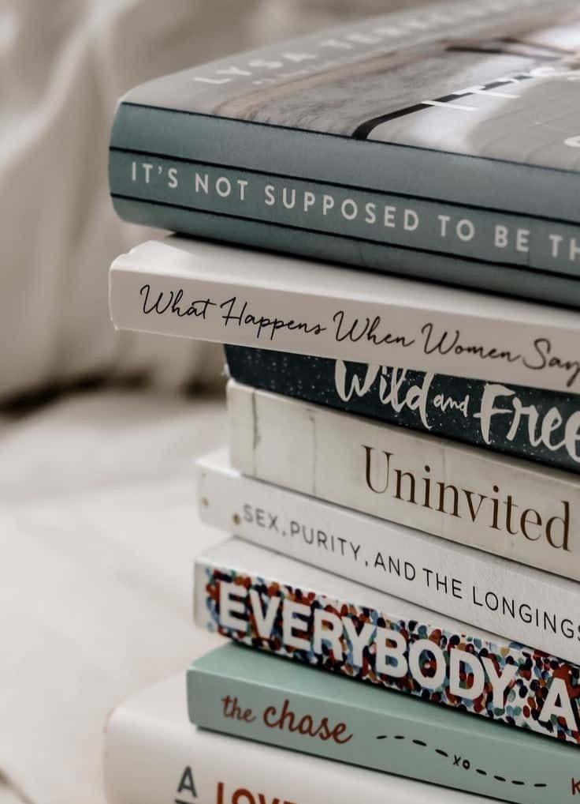
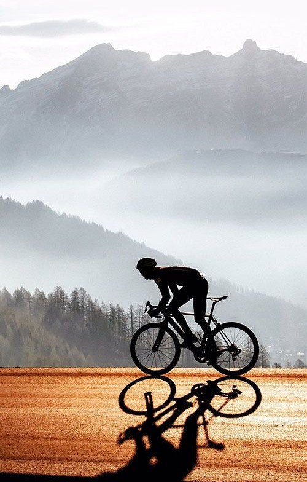
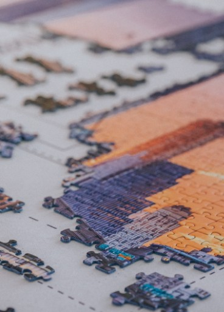

About Me
My name is Agnieszka Głuszkiewicz, and I study Algorithmic Computer Science at Wrocław University of Science and Technology.
My IT & Math Interests
I am particularly interested in software development, with a strong focus on C++ and Java. I enjoy working on challenging projects that require problem-solving and logical thinking. Some of my key projects include:
- Chinese Checkers game - written in Java, developed with a friend.
- Hair salon management app - built using Java and MariaDB SQL.
- Website about TV series - written in HTML and CSS, created with two friends.
Mathematics is another field that interests me, especially combinatorics, probability theory, and discrete mathematics. These areas are closely linked to computer science and help me approach challenges in AI, cryptography, and game theory from a logical perspective.
My Other Interests
Beyond programming, I enjoy reading books, practicing sports, and solving puzzles.
- Reading allows me to broaden my perspectives, relax, and escape from everyday stress. Fantasy books are my favorite, as they immerse me in different worlds.
- Sports keep me active. I love swimming, which is not only healthy but also enjoyable. I also enjoy cycling, as it allows me to explore beautiful places while being environmentally friendly.
- Solving puzzles requires patience and focus. I often listen to music while working on them, which helps me unwind and relax. My favorite puzzles feature landscapes, as the final image is always breathtaking.


